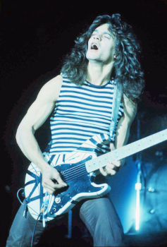
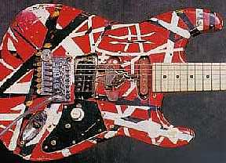

Eddie Van Halen
Edward Lodewijk Van Halen, mais conhecido como Eddie Van Halen (Nimegue, 26 de janeiro de 1955 - Santa Mônica, 6 de outubro de 2020), foi um guitarrista, compositor e produtor musical norte-americano nascido nos Países Baixos, co-fundador da banda Van Halen.
Um dos maiores guitarristas de todos os tempos, Van Halen ajudou a popularizar a técnica de solo de guitarra conhecida como tapping, permitindo que arpejos rápidos fossem tocados com as duas mãos no braço da guitarra.
Foi eleito o melhor guitarrista de todos os tempos, por uma votação promovida pela revista Guitar World, que contou com quase 500 mil votos. Foi eleito o 8º melhor guitarrista pela revista Rolling Stone.
Faleceu em 6 de outubro de 2020, aos 65 anos, após passar 5 anos lutando contra um câncer.
Biografia
Nascido em Amsterdã, Holanda, Edward Lodewijk Van Halen é filho de Jan Van Halen e Eugenia Van Halen (née van Beers). Jan Van Halen era um clarinetista. saxofonista e pianista holandês. e Eugenia Van Halen era indonésia (eurasiana) de Rangkasbitung, na ilha de Java, na Indonésia. O nome do meio de Eddie Van Halen, "Lodewijk", é o equivalente holandês de "Ludwing", ele foi nomeado em homenagem ao compositor Ludwing Van Beethoven. (Van Halen, mais tarde, continuou a tradição de nomear filhos com nomes de compositores quando nomeou seu filho, Wolfgang Van Halen, em homenagem ao compositor Wofgang Amadeus Mozart).
Em fevereiro de 1962, a família de Van Halen mudou-se dos Países Baixos para os Estados Unidos, estabelecendo-se em Pasadena, Califórnia. Tanto Eddie quanto seu irmão mais velho, Alex Van Halen, são cidadãos norte-americanos naturalizados. Os irmãos aprenderam a tocar piano quando crianças a partir dos seis anos de idade. Eles se mudaram de Pasadena para San Pedro para estudar com o professor idoso, Stasys (Stanley) Kalvaitis, que lhes ensinou piano clássico. Embora eles odiassem, eles continuaram para evitar o castigo imposto pela mãe caso eles se recusassem a ir.
Van Halen revelou em uma entrevista que ele nunca foi capaz de ler música. Em vez disso, ele aprendeu assistindo e ouvindo. Nos recitais de Bach ou Mozart, ele improvisava. De 1964 a 1967, ele conquistou o primeiro lugar na competição anual de piano realizada no Long Beach City College . Depois, os juízes comentaram que ele tinha uma interpretação interessante da peça clássica. A visão de Van Halen foi: "O quê? Eu pensei que estava tocando corretamente!" No entanto, de acordo com uma entrevista, tocar piano não se mostrou um desafio interessante para ele. Consequentemente, enquanto Alex começou a tocar guitarra, Eddie comprou um kit de bateria e começou a praticar por horas todos os dias.
Após Eddie ouvir o desempenho de Alex no solo de bateria de The Surfaris na canção "Wipe Out", ele decidiu mudar de instrumento e começou a aprender a tocar guitarra. De acordo com Eddie, quando adolescente, ele costumava praticar enquanto passeava em casa com a guitarra amarrada ou sentado em seu quarto por horas com a porta trancada.
Eddie e Alex formaram sua primeira banda com outros três garotos, chamando-se The Broken Combs, tocando na hora do almoço na Hamilton Elementary School em Pasadena, onde Eddie estava na quarta série. Eddie disse mais tarde que foi quando sentiu pela primeira vez o desejo de se tornar um músico profissional.
Eddie descreveu o " I'm So Glad " do supergrupo Cream, no Goodbye Cream como "alucinante". Ele uma vez afirmou ter aprendido quase todos os solos de Eric Clapton na banda Cream: "... nota por nota". "Eu sempre disse que Eric Clapton era minha principal influência", disse Van Halen, "mas Jimmy Page era na verdade mais do jeito que eu sou, de uma maneira imprudente e largada".
Contou com seu filho, Wolfgang Van Halen, como baixista do Van Halen.
Carreira
No início da carreira, Eddie tocava bateria e teclado e Alex tocava guitarra e estudava teclado. Com o tempo Alex ficou melhor que Eddie na bateria, e Eddie passou a treinar guitarra, o superando.
Eddie é um dos guitarristas mais aclamados da história, recebendo diversas honrarias e menções pelas mais variadas revistas especializadas no assunto. Em 2012, foi eleito o melhor guitarrista de todos os tempos, por uma votação promovida pela revista Guitar World, que contou com quase 500 mil votos. Ele também ocupa a 8ª colocação na lista dos 100 maiores guitarristas de todos os tempos pela revista Rolling Stone e a 7º posição na lista da Gibson dos 50 melhores guitarristas de todos os tempos.
Entre suas parcerias com outros músicos, está o solo de guitarra da canção "Beat It", do álbum Thriller, de Michael Jackson, que gravou juntamente com o guitarrista Steve Lukather (Toto). Também costuma fazer pontas em filmes e seriados.
Morte
No final de 1990, Eddie foi hospitalizado e tratado a um cancro na boca. A cirurgia subsequente extirpou-lhe cerca de um terço da língua. Em 2002 foi declarado como curado. No final de 2019, voltou a ser internado para tratamento ao mesmo tipo de cancro. Morreu, no dia 6 de outubro de 2020, em Santa Mônica, aos 65 anos, dessa mesma patologia.
Equipamento
A composição das guitarras Frankestrat, construídas por ele mesmo era a seguinte: corpo em madeira de amieiro ou tília (dependendo de cada modelo), braço em madeira de ácer, captador Gibson PAF, retirado de uma Gibson ES-335 e rebobinado à mão por ele mesmo, e ponte Floyd Rose.
Inicialmente utilizou amplificadores Peavey modelo 5150, seguido do modelo 5150 II, passando depois para o Marshall Superlead Plexi, modificados por Jose Arredondo, pedais MXR Chorus, Flanger, Delay, Dynacomp e Phase 90. E nunca deixava a sua harmónica em casa.
Depois de um tempo criou, em parceria com a Music Man, as guitarras Music Man Axis EVH signature, passando depois para as guitarras Peavey Wolfgang, com captadores DiMarzio Custom Made.
A Fender criou uma réplica exata da frankestein, chamada por Eddie de "My Baby", além de ainda existirem os modelos Charvel EVH. Eddie usava as EVH Wolfgang criadas por sua própria fábrica, em 2009, e amplificador EVH 5150 III.
Seu primeiro instrumento foi construído por ele mesmo. A Frankenstrat era uma guitarra com corpo Fender Stratocaster 60 e braço em madeira de ácer. Sua primeira pintura foi inteira branca com listras pretas, em 1972. Em 1974 Eddie percebeu que havia muitas guitarras com pinturas parecidas, então pensou: "vou melhorar essa pintura, farei diferente." Teve, então, a idéia de pintá-la inteira de vermelho e aplicar listras brancas e pretas. O corpo da guitarra custou-lhe uns 80 dólares na época e era usado, e o braço uns 50 dólares. Com os captadores ele não teve dúvidas, usou o captador de uma Gibson Flying V. Surge a a Frankenstrat.
Recentemente, a Fender Musical Instruments Corporation juntou-se a Eddie para fazer uma réplica de sua guitarra, incluindo os detalhes de uso. Eddie aceitou e dedicou 2 anos a este trabalho. O resultado foi uma réplica perfeita em cada detalhe, incluindo lascas nos cantos, riscos, queimaduras de cigarros e até mesmo o captador "neck pickup", que não funciona.
Isso foi tudo, espero que tenham gostado do conteúdo.